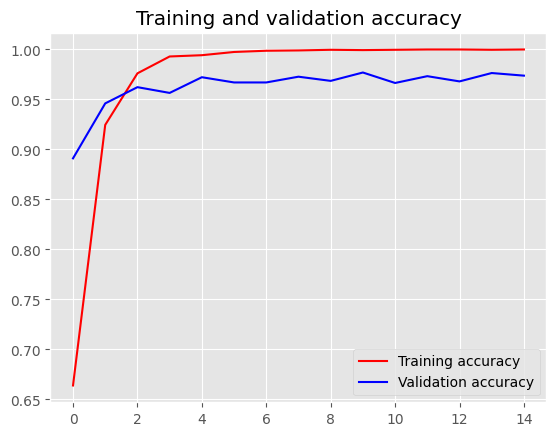
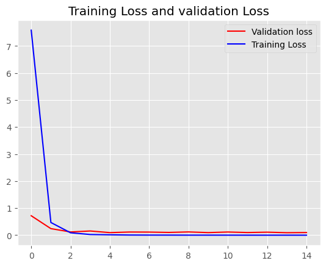
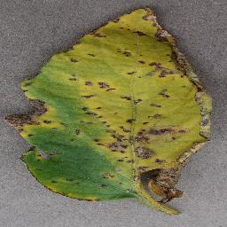
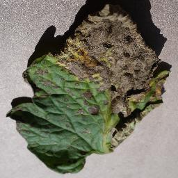
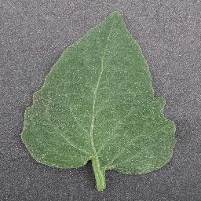
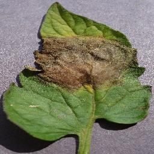

Leaf Scan: Tomato Disease Identification
Abstract & Problem Overview
Tomato crops are critically vulnerable to foliar infections such as bacterial spot, early blight, and late blight, which can devastate entire yields if unaddressed. Traditional diagnosis requires trained plant pathologists, which are often unavailable in rural smallholder farming communities.
Leaf Scan addresses this challenge through deep transfer learning. By fine-tuning pre-trained convolutional neural networks (InceptionV3, DenseNet, and VGG19), the model learns nuanced leaf disease patterns. The trained model is serialized and deployed directly to client browsers using TensorFlow.js, enabling instantaneous offline and edge evaluation without backend server latency.
System Demonstration

Model Training & Validation Performance
During the fine-tuning process, the InceptionV3 architecture demonstrated superior feature extraction and rapid convergence. The model achieved >97% validation accuracy on unseen test sets across four distinct diagnostic categories (Healthy, Bacterial Spot, Early Blight, Late Blight).


Edge Deployment via TensorFlow.js
The model weights were quantized and converted to TensorFlow.js graph model format. The client-side runtime executes inference directly on WebGL or WebGPU hardware acceleration on the user's phone or laptop:
- Privacy: User images never leave the local device.
- Zero Cloud Costs: Serverless architecture scales freely without per-inference API expenses.
- Low Latency: Inference completes in under 150ms on mobile browsers.
Sample Diagnostic Classes

Bacterial Spot
Early Blight
Late Blight
Healthy